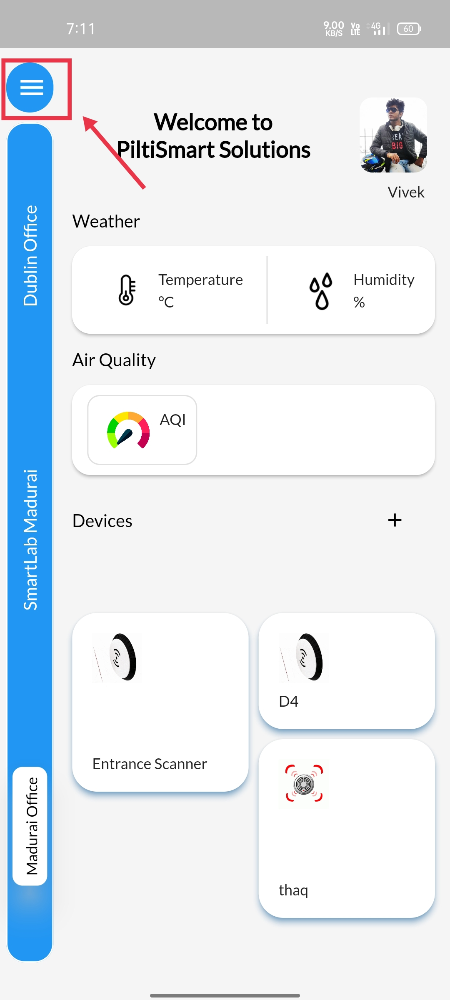

STEP 1The LOGIN Page will be displayed once you open the App, & where you can proceed to LOGIN or create a new LOGIN by clicking register |
 |
STEP 2Enter your EmailID & Password then click LOGIN button.& (If you are an existing user) |
 |
STEP 3Click on the top Left corner Menu Button, Dashboard will be Revealed |
 |
STEP 4Next click the Registry Button available in the Dashboard. |
 |
STEP 5Click the ADD Item Tab Displayed in the Bottom of the registry section. |
 |
STEP 6
Click the DropDown Menu displayed in the popup tab |
 |
STEP 7Select the appropriate device profile corresponding to your device available in the DropDown Menu. |
 |
STEP 8Then enter the appropriate Device Mac ID &select coressponding Micro Controller Board Name &Next click the Create Button. |
 |
STEP 9Atlast a Confirmation message will be displayed&informing that Device Info is Created. |
 |